![REST. The top row shows the four failures of Cross-Entropy (CE) only training of the thought. REST adds a $\beta$-weighted loss on to the CE, with one term per failure, under the same data and compute. (a) Accuracy gain for single- and multi-agent settings across Small (1–2B) and Large (3–4B) models. (b)–(f) REST thoughts spread apart instead of collapsing, reach a lower training CE and a higher accuracy, recover more accuracy when they replace the oracle text, reach a final answer more often, and keep their superposition.](static/images/teaser.png)
Abstract
Large language models can reason in continuous space instead of decoded text, by recurring on their own hidden states or by passing those states between agents, while training supervises only the Cross-Entropy (CE) of the final decoded answer and does not constrain the thought. Theoretical and empirical analyses establish and confirm four failures of CE-only training that lead to a lower probability of the correct answer such as collapsing thoughts across distinct questions and retaining irrelevant information. We introduce REST (REpresentation-Supervised Thoughts), a training objective that turns four properties of a valid thought representation (causality, minimality, separability, and stability) into differentiable losses added to CE. We instantiate it in latent single-agent and multi-agent systems, without architectural changes or added parameters at inference. Across 7 benchmarks spanning mathematics, science, medicine, and code generation, with the same training data, compute, and latent budget, REST increases accuracy over CE-only training across agent settings and model sizes by up to 7.5 percentage points and convergence on a final answer by 30%. Furthermore, REST thoughts encode more of what is required to achieve the correct answer, and decoding them better recovers the intended output of the agent, which makes latent communication easier to interpret.
Overview
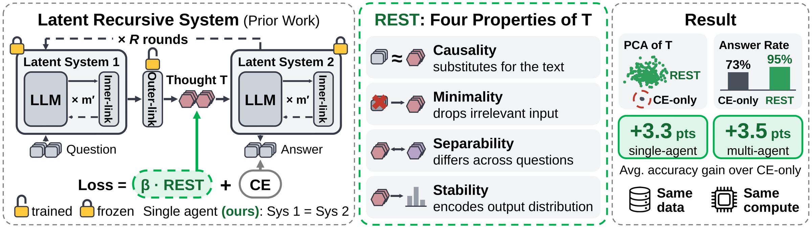
Background
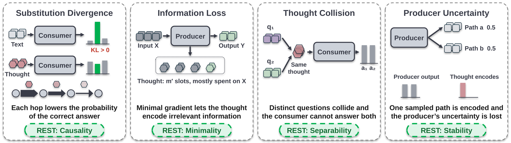
REST: Representation-Supervised Thought(s)
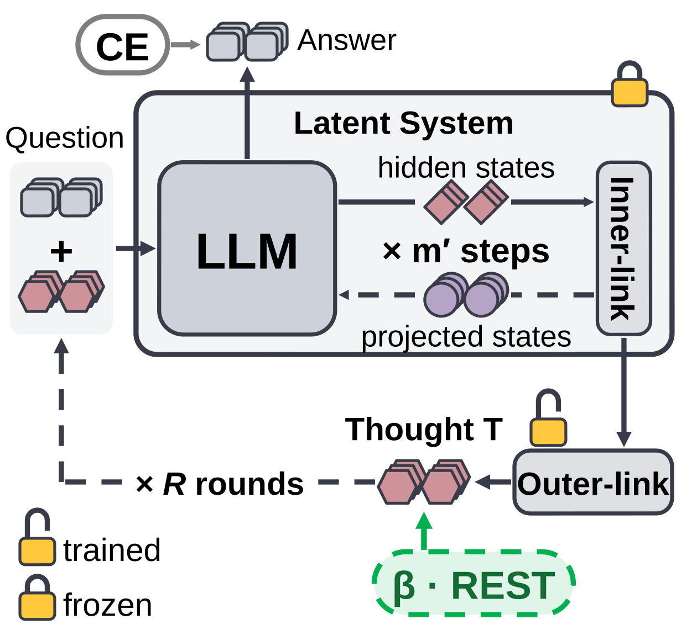
Evaluation
Experimental Setup
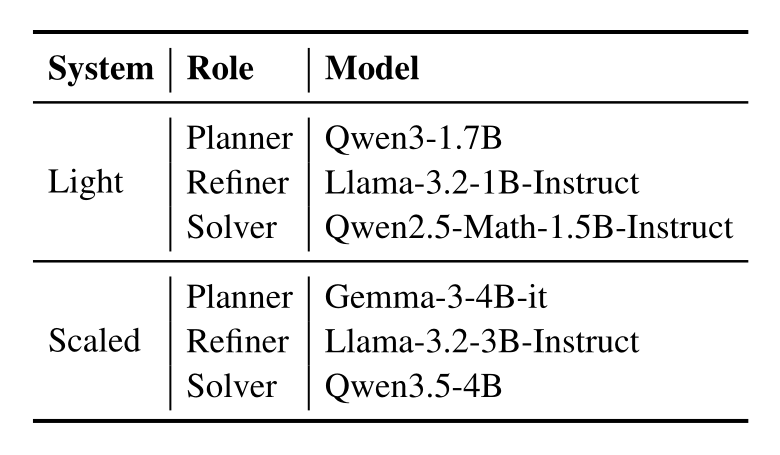
Single-Agent Evaluation
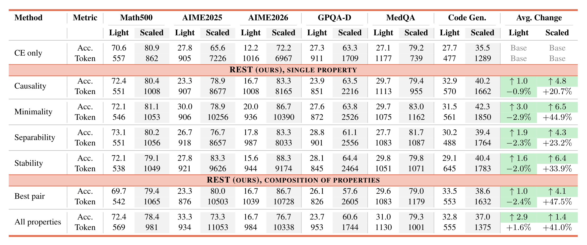
Multi-Agent Evaluation
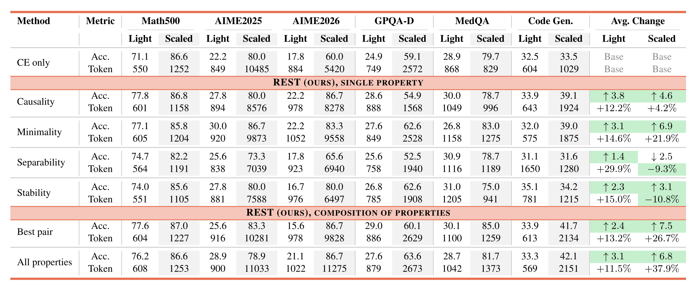
Analysis
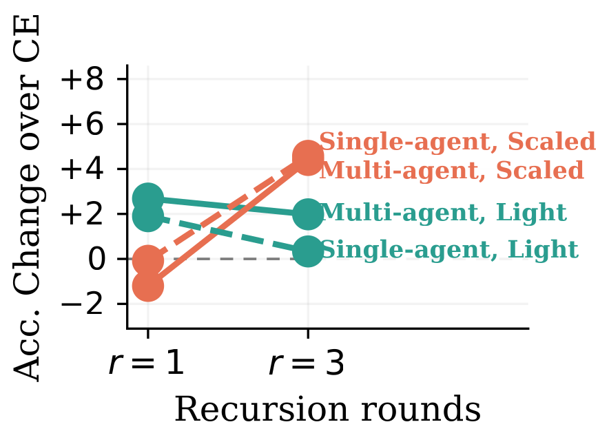
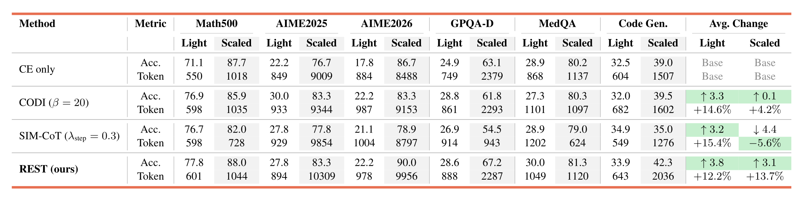
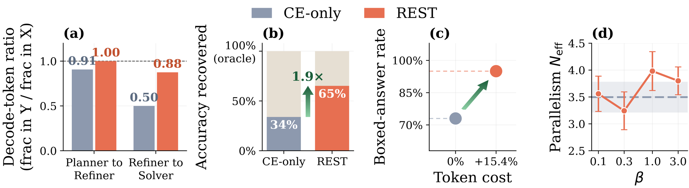
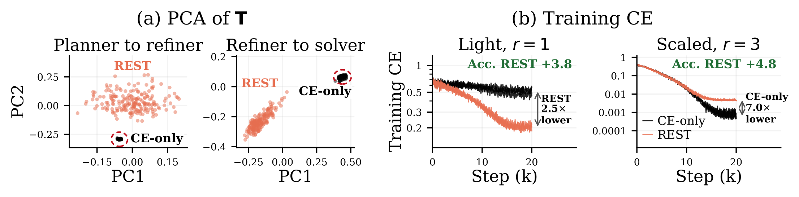
Related Work
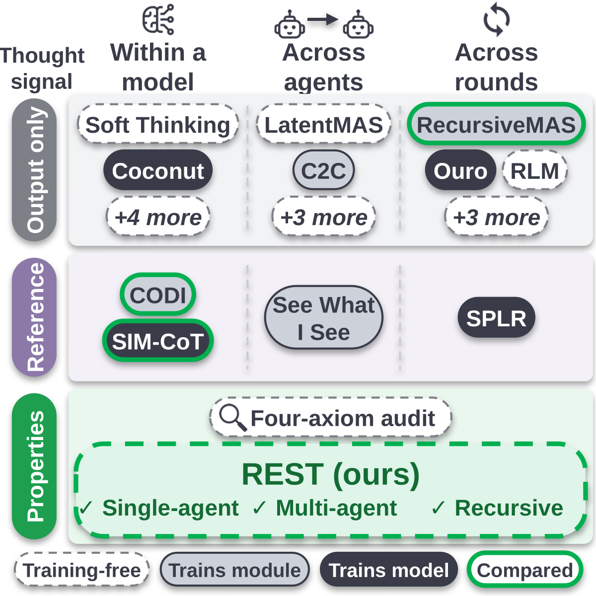
BibTeX
@misc{seddik2026principled,
title = {Principled Thoughts for Latent Recursive LLM Systems},
author = {Fahd Seddik and Fatemeh Fard},
year = {2026},
url = {https://fard-lab.github.io/REST/}
}